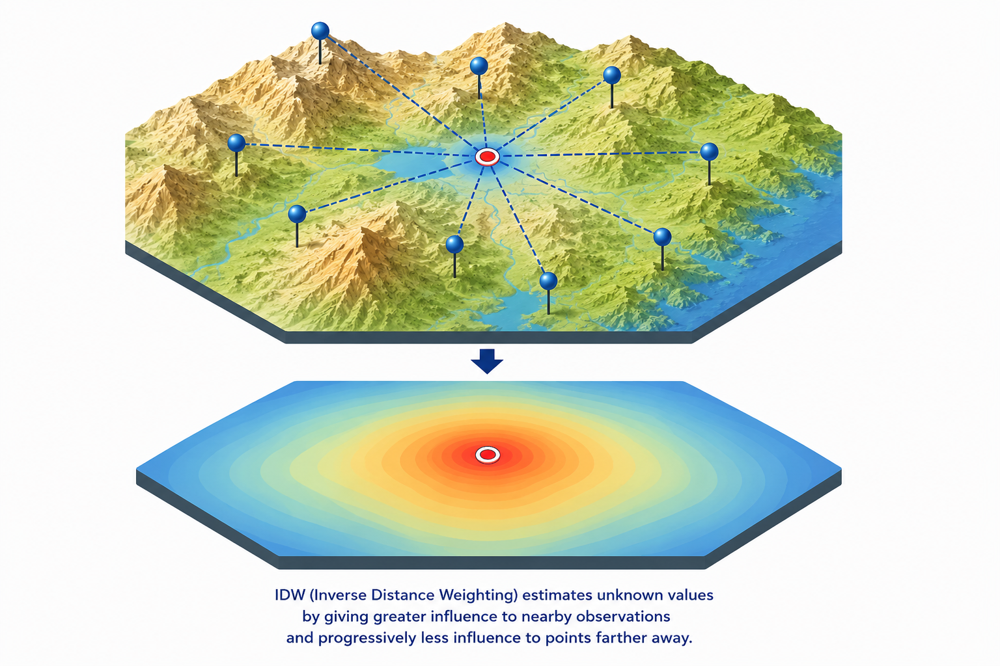

How do we estimate rainfall where we don't observe it?


What Ordinary Kriging is
Understand the core concept of geostatistical interpolation

Why we use it
See how spatial dependence improves prediction accuracy

How to apply it
Learn the workflow from variogram to prediction map
A Quick Review
Spatial interpolation is the process of predicting unknown values at unsampled locations based on measurements from known locations.
Deterministic interpolation estimates unknown values using mathematical rules based on nearby observations, relying on distance or smoothness assumptions.
- Nearest Neighbor
- Bilinear
- Inverse Distance Weighting (IDW) - Our Baseline Method


What Is Kriging?
Kriging is a geostatistical interpolation method that predicts unknown values using weighted nearby observations, where weights are determined by the spatial autocorrelation structure of the data.
IDW: Weights depend mainly on distance
Kriging: Weights depend on distance, spatial autocorrelation, spatial arrangement, and statistical optimization

Step-by-Step Ordinary Kriging Workflow
Step 2. Empirical Semivariogram Calculation
The semivariogram measures half the average squared difference between paired data values separated by distance h:
In short: On average, how much do values differ when they are separated by distance h?
The spatial relationship becomes the statistical foundation for how Kriging assigns weights.